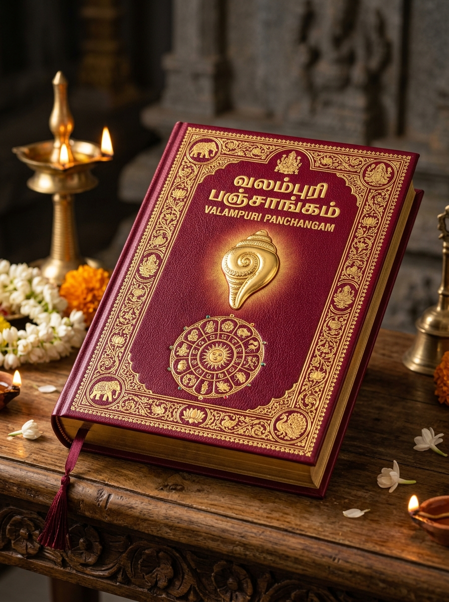

About Chithode Navagraha Sangam
Preserving 50+ years of Vedic astrological research across 3 generations of mastery in Tamil Nadu.
50 ஆண்டுகால பாரம்பரிய ஜோதிட அறக்கட்டளை
சித்தோடு நவகிரக ஆராய்ச்சியாளர் சங்கம் (Chithode, Erode District) தமிழ்நாட்டின் புகழ்பெற்ற பாரம்பரிய ஜோதிட ஆய்வு அமைப்பாகும். 50 ஆண்டுகளுக்கும் மேலாக ஜோதிட சாஸ்திரத்திற்கு அரும்பணியாற்றிய மூல குரு மகீலீஷ்வரன் அய்யா அவர்களின் ஆசி மற்றும் அஸ்திவாரத்தில் இச்சங்கம் நிறுவப்பட்டது.
இவ்வழியில் இரண்டாம் தலைமுறையாக ஜோதிடர் வரதராஜன் அவர்கள் சங்கத்தின் வளர்ச்சிக்கும் ஜோதிட ஆராய்ச்சிகளுக்கும் அளப்பரிய பங்களிப்பை வழங்கினார். இன்று மூன்றாம் தலைமுறை ஜோதிடராகிய பேரன் வள்ளல் பாரி அவர்கள், 'வலம்புரி பஞ்சாங்கம்' வெளியீட்டின் வாயிலாக மக்கள் யாவரும் அன்றாட சுப நேரங்களையும் நவகிரக இயக்கங்களையும் அறிந்து நன்மை பெறச் செய்து வருகிறார்.

Chithode Sangam Core Tenets
Uncompromising commitment to mathematical truth, spiritual sanctity, and benevolent guidance.
50 Years of Experience
Backed by over half a century of empirical horoscope research established by Moola Guru Maguleeswaran Ayya.
Vedic Lineage Fidelity
Strict adherence to classical Rishi traditions, accurate Drigganitha calculations, and authentic Tamil solar-lunar almanac principles.
Community Service
Dedicated to helping families choose auspicious Subha Muhurthams and perform authentic Navagraha remedies without superstition.
Valampuri Publication
Publishing the authoritative annual Valampuri Tamil Panchangam reference manual used by temples, astrologers, and households.